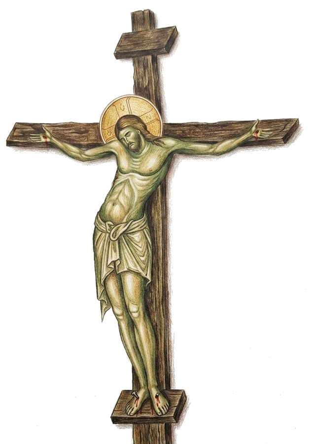

Having commemorated the Mother of God, with all the
saints let us commend ourselves and each other and all our life unto Christ our God.
The wonderful conclusion to our prayer is the affirmation of our unity in the Church with the
Church in Heaven, the wonderful possibility of dedicating to Him “ourselves, each other,
and all our life....”17

By praying this prayer and participating in the Divine Liturgy as a whole “… we
show that our life is ‘given away’ to Him, that we follow Christ, our head, in
His movement of total love and sacrifice. Let us stress again – our sacrifice in the
Eucharist is not distinct from that of Christ, is not a new sacrifice. Christ
offered Himself once and for all, and His sacrifice, being full and perfect,
makes any new sacrifice needless. But it is precisely the meaning of our
eucharistic offering, that in it we are given the priceless possibility of
‘entering’ in Christ’s sacrifice, of being participants of His unique
offering of Himself to God. Or in other terms, His unique and perfect sacrifice has made
it possible for us – the Church, His Body – to be restored and readmitted into
the fullness of true humanity: the sacrifice of praise and love.
The one who has not understood this sacrificial character of the Eucharist, who has come to
receive but not to give, has not accepted the very spirit of the Church,
which is above everything else the acceptance of, and participation in, Christ’s
sacrifice.”18
Commending (Dedicating) Ourselves to God
Having commemorated the Mother of God, with all the saints let us commend ourselves and each other and all our life unto Christ our God. The wonderful conclusion to our prayer is the affirmation of our unity in the Church with the Church in Heaven, the wonderful possibility of dedicating to Him “ourselves, each other, and all our life....”17

By praying this prayer and participating in the Divine Liturgy as a whole “… we show that our life is ‘given away’ to Him, that we follow Christ, our head, in His movement of total love and sacrifice. Let us stress again – our sacrifice in the Eucharist is not distinct from that of Christ, is not a new sacrifice. Christ offered Himself once and for all, and His sacrifice, being full and perfect, makes any new sacrifice needless. But it is precisely the meaning of our eucharistic offering, that in it we are given the priceless possibility of ‘entering’ in Christ’s sacrifice, of being participants of His unique offering of Himself to God. Or in other terms, His unique and perfect sacrifice has made it possible for us – the Church, His Body – to be restored and readmitted into the fullness of true humanity: the sacrifice of praise and love.
The one who has not understood this sacrificial character of the Eucharist, who has come to receive but not to give, has not accepted the very spirit of the Church, which is above everything else the acceptance of, and participation in, Christ’s sacrifice.”18